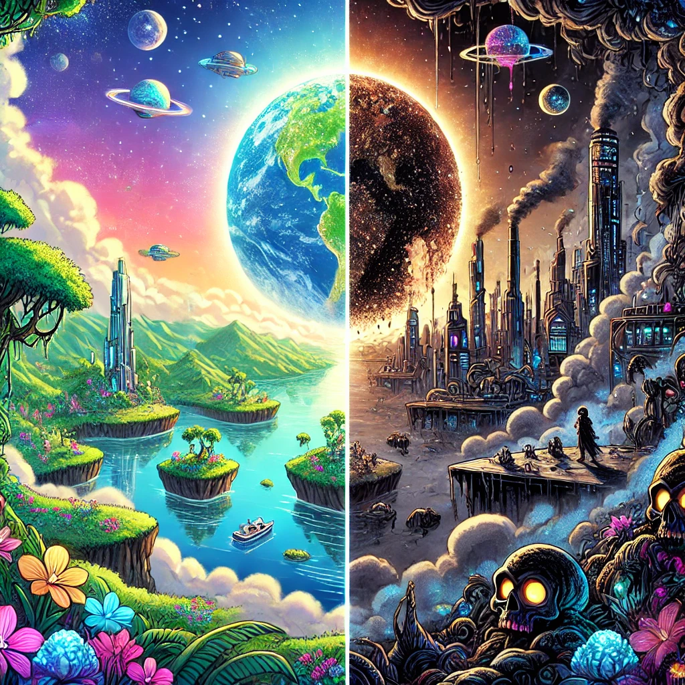
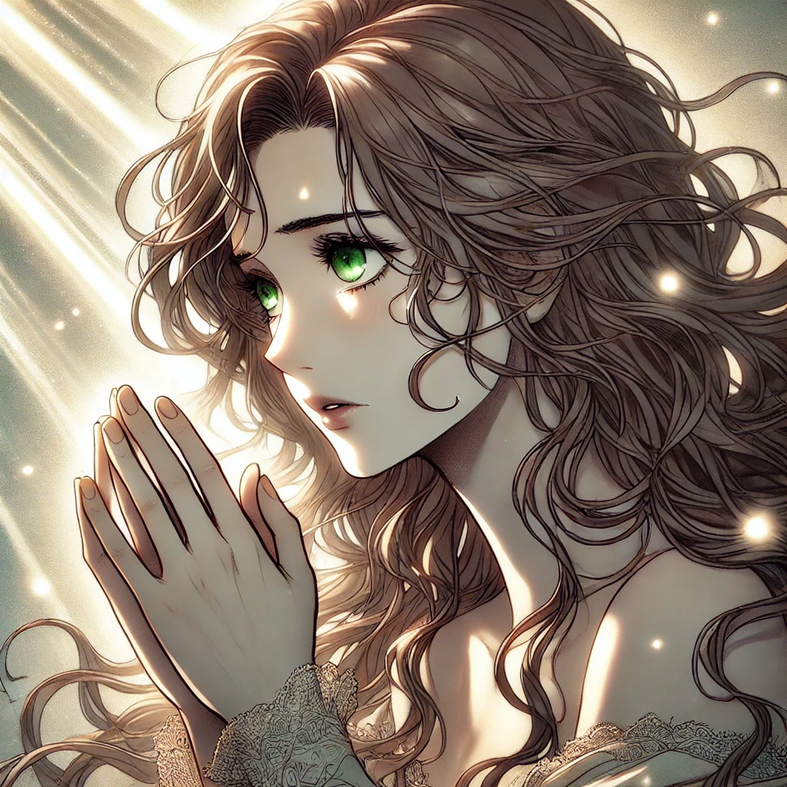
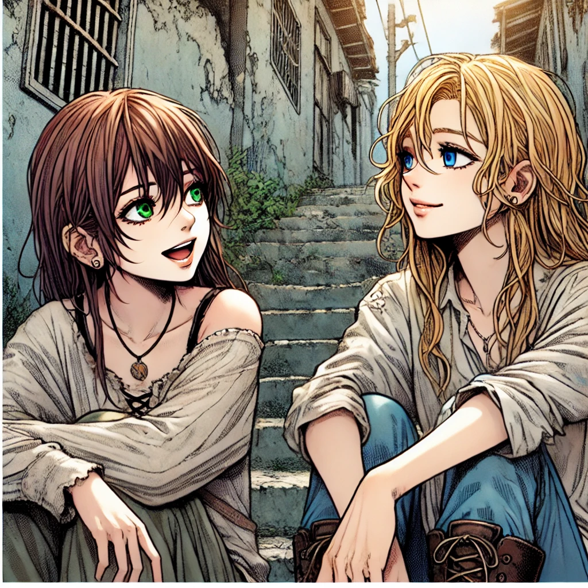

The planet XYZ123 was once a breathtaking paradise—lush with trees, teeming with wildlife, and brimming with the magic of Mother Nature. Humans, standing at the pinnacle of all species, were entrusted with the duty of maintaining the planet’s delicate balance.
With time, they evolved. One might assume that evolution would bring progress, wisdom, and harmony. But instead, with every step forward, humanity took a step back—losing the one thing that truly defined them: their humanity. Money became power, and lust turned into fashion. Respect and shame became meaningless in this new world. The poor resented the rich, while the rich exploited nature without restraint. Nothing was stable anymore.
Yet, amid the chaos, a few souls still carried the remnants of humanity. But they were powerless. The cruel rule of this world was simple: to gain power, one had to abandon the last traces of their humanity. And so, the cycle continued.

Even in these darkest times, one force kept humanity from complete destruction—faith. No matter how many sins they committed, they never forgot to kneel before their Creator in repentance. Perhaps, it was the prayers of the pure-hearted that kept the Creator from erasing every last trace of His own creation.
They say time heals everything. But humans seemed to have forgotten this wisdom. Crime escalated with each passing day. Knowledge no longer fostered morality. The educated used their intellect to devise crueler acts, while the uneducated wielded ignorance as an excuse for their barbarity. The world had become a place where no one was safe—regardless of gender, age, or race. Even animals were subjected to unspeakable horrors, as if monsters roamed freely, feasting on suffering itself.
Amid this broken world, there was one girl—a beacon of purity in a corrupted society. She still held on to the old teachings, still believed in goodness, still hoped that everything would be set right. She was the last reflection of what humanity was meant to be.
But then, something happened. The last drop of hope within her was lost. Her belief shattered.
And that single moment changed everything—
In ways no human could ever have imagined.

Rowana, a girl of wisdom and unwavering faith, possessed breathtaking green eyes and thick, smooth brown hair. Life had shown her its most harrowing faces—she had witnessed her own grandmother murder her husband for money and endured the agony of losing her mother, who took her own life after being worn down by Rowana's father's gambling and alcoholism. After her mother’s death, Rowana suffered further, enduring abuse at the hands of her own father.
Yet, despite everything, she never lost her faith. Unlike other girls her age, she refused to become a product of the corrupted society that surrounded her. She carried the weight of her past with resilience, moving forward with nothing but a steadfast belief and a smile—the only remedy that kept her spirit alive.
But one fateful day shattered everything.
Rowana had only one person she could truly rely on—her best friend, Sofia. They were more than friends; they were sisters, two pure souls navigating a tainted world together. Sofia, with her golden blonde hair and piercing blue eyes, was Rowana’s source of happiness, her light in the darkness.

As usual, they visited the childcare facility where they volunteered, providing basic education and distributing government-provided goods to the children. Though the supplies were nothing more than discarded, barely edible leftovers, for those impoverished souls, even scraps were a blessing.
That day, horror struck.
A notorious gang—backed by powerful politicians and businessmen—stormed the facility, using the lives of the helpless as leverage to push their unethical demands. Rowana and Sofia instinctively shielded the children, desperate to protect them. But Sofia, unable to hide her fury, locked eyes with the thugs in defiance.
The gangsters, their egos bruised by her fearless gaze, grabbed Sofia by the hair and yanked her forward.
Rowana’s heart broke at the sight. She dropped to her knees, pleading for Sofia’s release, but was shoved aside with force. Sofia, undeterred, yelled and cursed them for their cruelty. Her words only fueled their rage.
One of the thugs delivered a brutal kick to her stomach, sending her crumpling to the ground. They laughed as they tore at her clothes, humiliating her before the terrified children.

Rowana froze, paralyzed by fear. Her mind screamed for her to act, but her body refused to move. She watched in helpless horror as the men continued their assault, their hands stripping away the last shreds of dignity from Sofia’s trembling form.
Something inside Rowana snapped.
She no longer turned to God for strength. She no longer prayed for salvation.
For the first time in her life, she cursed the heavens, denouncing the Creator she had devoted herself to. Tears streamed down her face, but they were no longer of sorrow—they were of seething rage.
A guttural growl escaped her lips as fury consumed her entire being. The air around her seemed to tremble, as if the universe itself recognized the loss of its last believer.
And in that moment, everything changed.